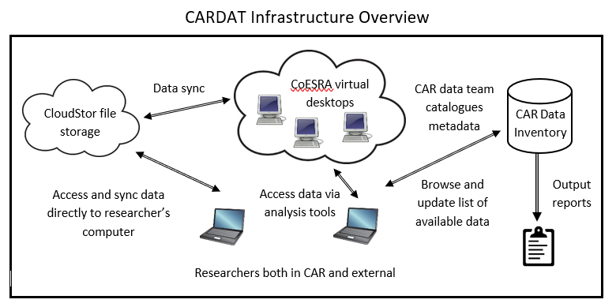

CARDAT
Home → Why use CARDAT? → CARDAT infrastructure → Who can use CARDAT? → Data → Data inventory → Examples → Email us →Welcome to CARDAT
Centre for Air pollution, energy and health Research (CAR) Data Analysis Technology (DAT) is a collection of IT infrastructure that enables easy data sharing and reuse, and reproducible data analysis. It is an online research platform that collates a wide array of population, health and environmental datasets with a collection of analysis tools and methodology resources. The data in CARDAT includes air pollution, weather and built environment data in Australia and internationally. This platform enables collaboration between researchers and policy makers.

CARDAT infrastructure consists of:
- the CAR Data Inventory (a catalogue of available datasets and their associated metadata records,
- a cloud based file store (CloudStor) which enables shared access to datasets, and the ability to sync data automatically, and
- an online platform for data analysis (CoESRA) which provides a secure environment for reproducible, collaborative data analysis.
CARDAT's mission is to provide data, methods and tools to support CAR to inform policy though research and analysis of air pollution, energy and health.